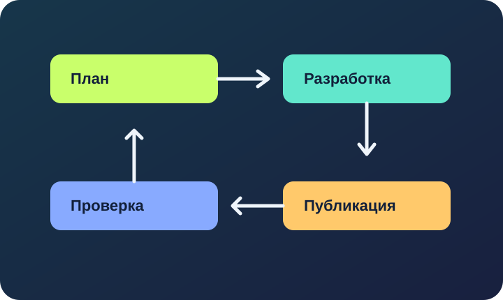

Рабочий процесс веб-разработки
Небольшой сайт проще создать последовательно: спланировать, разметить, оформить, проверить и опубликовать.
От задачи до разметки
Сначала сформулируйте, какие страницы необходимы и что должен делать посетитель. После этого создайте навигацию и структуру каждой страницы.
- Разобрать требования и перечислить страницы.
- Создать семантическую HTML-разметку.
- Добавить CSS и проверить адаптивность.
- Добавить JavaScript для интерактивности.

Проверка и публикация
- Все внутренние ссылки ведут к существующим страницам.
- Внешние ссылки открываются безопасно в новой вкладке.
- Изображения имеют осмысленные альтернативные описания.
- Формы содержат подписи и корректные типы полей.
- Скрипты работают без ошибок.